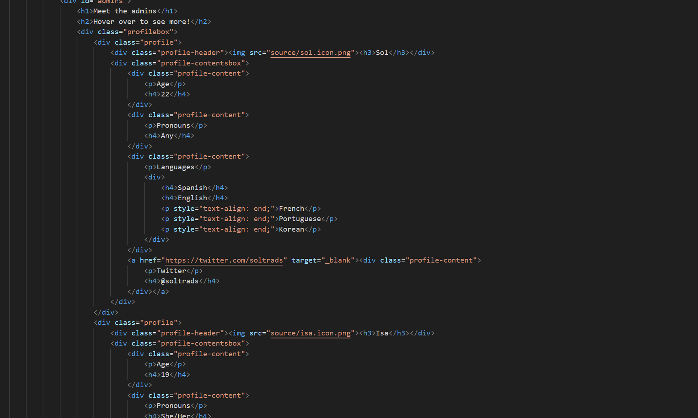
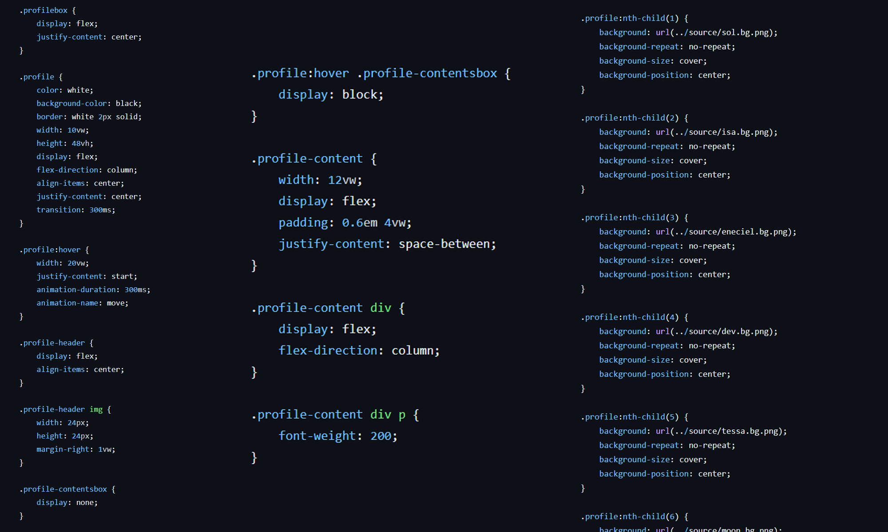

전 세계에서 보내는 편지
#DESIGN
개요


Quackity Subs 팀에서 진행한 프로젝트로, 전 세계의 팬들이 보내는 메세지를 모아 책으로 제본하여 실물을 직접 전해주었다. 해당 프로젝트에서 한국어와 일본어를 영어로 번역하고 전체 편집디자인을 담당했다.
기간:
2024. 06. 01 ~ 2024. 07. 13
사용:
Adobe Indesign, Adobe Photoshop
아이디어 스케치

아이디어 수집
처음 아이디어가 나온 건 7월에 있을 오프라인 행사에 갈 수 있게 된 팀원의 작은 선물 준비였다. 레이아웃과 챕터 구분, 들어갈 내용에 대한 간단한 스케치를 공유해주면서 다른 팀원들도 다같이 참여하게 되었다. 콘텐츠의 틀이 어느정도 잡히고 난 뒤 인터넷에 팬들이 편지, 사진, 노트, 추천하는 음악을 보낼 수 있는 폼을 오픈하고 스케치를 바탕으로 레이아웃 겸 템플릿을 제작하였다.
팀원들이 본인의 모국어가 아닌 영어로, 게다가 텍스트만으로 아이디어를 공유하려 하니 한계가 있어 배우기 쉬운 피그마 사용법을 간단하게 알려주고 원하는 레이아웃을 직접 표현할 수 있도록 도와주었다. 모두의 손을 조금씩 거쳐 목차, 스타일 가이드, 레이아웃, 그리고 팬들이 보낸 콘텐츠를 담을 템플릿을 구상한 뒤, 인디자인으로 옮겨 작업을 시작했다.
레이아웃
꽈끼띠
뭐라쓰지
템플릿 작업
호버 애니메이션
간단하게 CSS만을 활용해 구현했다. 헤더 부분과 세부 정보 부분을 분리하고 세부 정보는 숨겨둔 뒤, :hover에 스타일을 추가해 width, display를 조정했다.
코드
 profilebox라는 섹션 영역을 먼저 잡은 후, profile로 각 팀원의 공간을 만들어 6개가 가로로 나열되도록 했다. 그 안에는 다시 profile-header와 profile-contentbox로 구분했다. profile-header에는 flex 속성과 이미지 크기 조정을 부여하여 아이콘과 닉네임을 함께 배치했다. profile-contentbox 안에는 각 행별 영역인 profile-content를 만들어 인덱스와 콘텐츠를 가로로 배치했다.
모바일 버전

모바일에서는 호버가 포커스와 유사하게 작동하긴 하지만, 여전히 마우스가 없는 것은 마찬가지였기에 기능을 클릭으로 대체할 필요가 있었다.
코드

클릭 시 작동하는 function을 만들고 if문을 작성해 profile이 이미 열려 있는지 확인해 열려있다면 닫고, 아니라면 for문이 모든 profile의 "clicked" 클래스를 제거한 다음 클릭된 타겟에만 다시 클래스를 추가하도록 했다. 마지막으로 이니셜 function으로 for문을 작성해 모든 profile에 이벤트리스너를 추가했다.